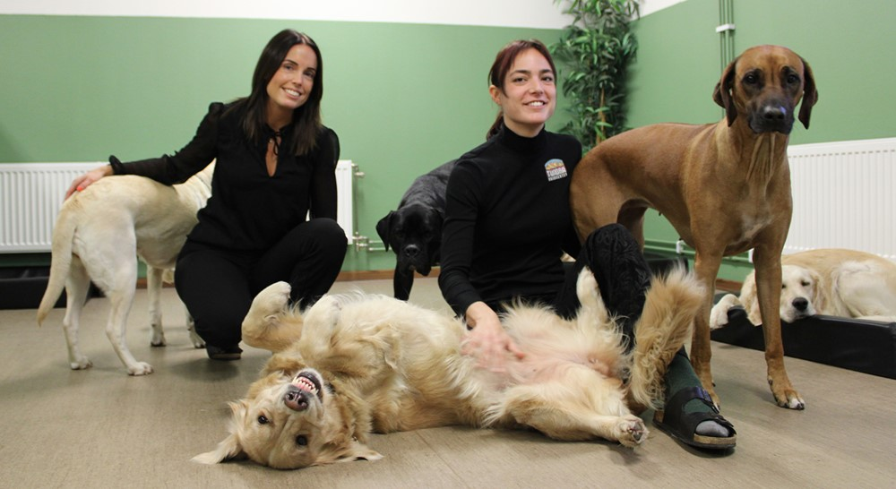
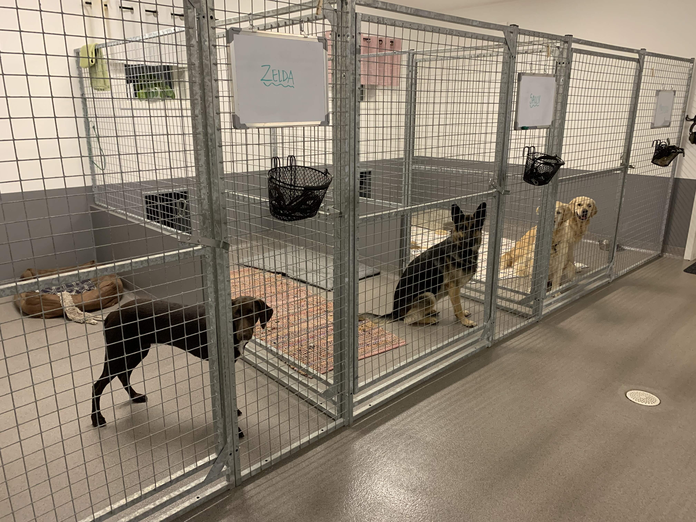
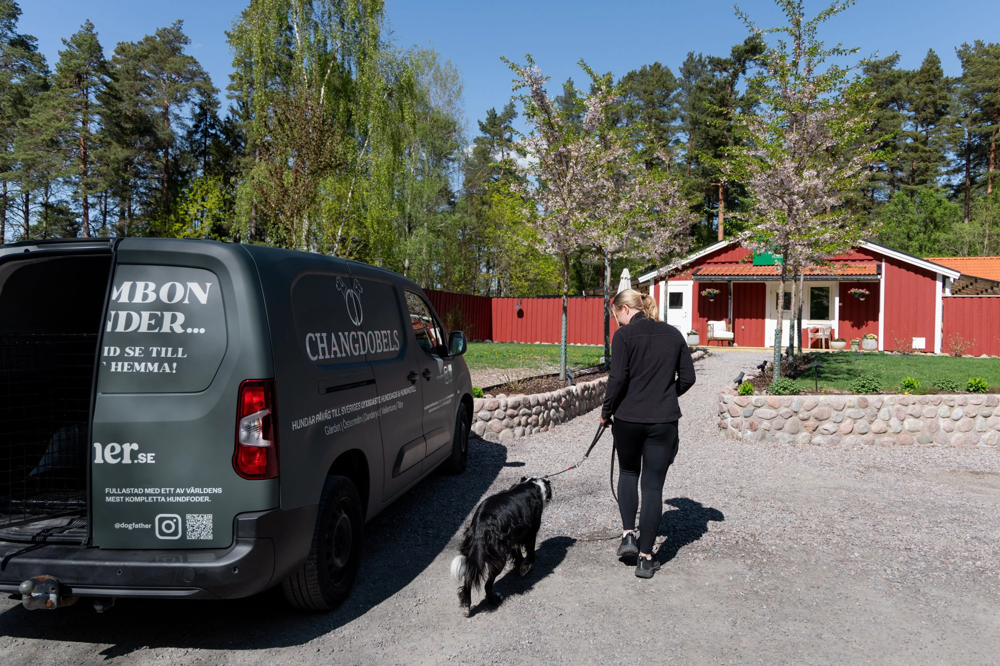

Hunddagis - heldag
En hel dag med lek, motion, vila och omsorg tillsammans med våra andra hundgäster.
Pris: 320 kr
På Tassen får din hund motion, lek och omtanke
medan du jobbar eller är på resande fot.
Vi är ett litet hunddagis och pensionat strax utanför
stan.
Med två engagerade hundskötare, plats för tolv
hundar och ett stort
inhägnat uteområde skapar vi en
trygg och personlig miljö för varje hund.
Välj det som passar dig och din hund
En hel dag med lek, motion, vila och omsorg tillsammans med våra andra hundgäster.
Pris: 320 kr

Ett bra alternativ för hundar som behöver tillsyn och aktivering under en del av dagen.
Pris: 190 kr

Trygg övernattning med omsorg, rastning och sällskap när du behöver vara bortrest.
Pris: 450 kr/natt

Har du en hektisk morgon eller ligger vi inte på din väg? Vi hämtar och lämnar din hund åt dig.
Pris: 150 kr
Planera ditt besök hos oss
Tid: [JavaScript fyller i tiden]
Datum: [JavaScript fyller i datumet]
Status: [JavaScript fyller i Öppet just nu / Stängt just nu]
Berätta när din hund behöver vara hos oss.
Fyll i hundens namn och önskat datum så återkommer vi till dig via telefon.
Ett litet pensionat med mycket omtanke
Tassen är ett familjärt hunddagis och pensionat för dig som vill att din hund ska få en trygg och aktiv vardag.
Vi tar emot högst tolv hundar åt gången, vilket gör att vi kan ge varje hund den uppmärksamhet den behöver.
Vårt stora inhägnade utomhusområde ger hundarna gott om plats att leka och röra på sig. Under dagen varvar vi aktivitet med vila så att hundarna får en lugn och trivsam vistelse.
Hundskötare
Nina tar hand om hundarna under dagarna och ser till att alla får en trygg, aktiv och rolig vistelse.
Hundskötare & ägare
Pelle driver Tassen och arbetar dagligen med hundarna. Han ansvarar också för att verksamheten fungerar som den ska.
Några ord från hundägare som har valt Tassen.
Har du frågor? Hör gärna av dig.
Hagvägen 4Ring eller skicka ett mejl om du vill veta mer om våra tjänster eller diskutera vad som passar bäst för din hund.